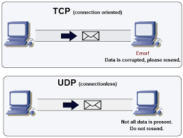

Illustration de la transmission des données :

Sur cette image est illustré la principale différence entre ces deux protocoles : TCP s'assure de la bonne transmission des données au contraire de UDP.
TCP et UDP sont deux principaux protocoles de la couche d'information entre deux machines en utilisant leur adresse IP et un numéro de port. Ils servent donc à envoyer des données/fichiers entre deux ordinateurs différents par un logiciel commun.
TCP est utilisé dans la plupart des cas (même s'il est très lent s'il y a beaucoup de données, il est beaucoup plus fiable) pour transmettre ces données entre logiciels situés sur des ordinateurs différents.
UDP est un protocole destiné à compléter la couche de transport en mode non-connecté, à remplacer le TCP pour les applications qui n'ont pas besoin des services du TCP, pour les applications logiciels satisfaisant à un modèle de type "interrogation-réponse" (où la réponse peut être comprise comme un accusé de réception de la question); ou plus généralement les applications qui préférent perdre des données plutôt que de les recevoir en retard ainsi que les applications qui échangent de faibles quantités de données avec beaucoup d'ordinateurs.